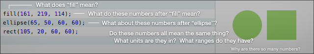
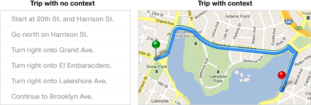
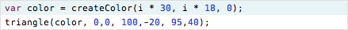
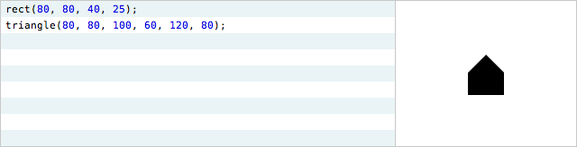
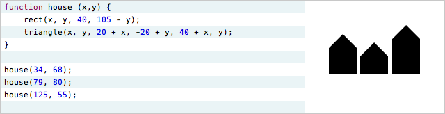
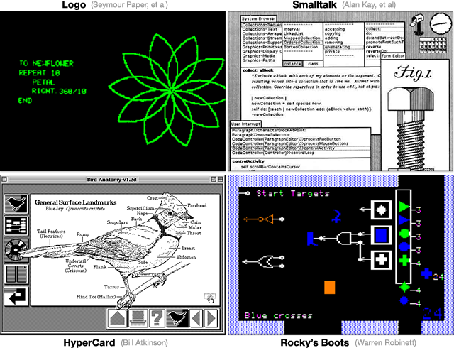
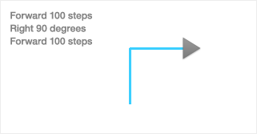
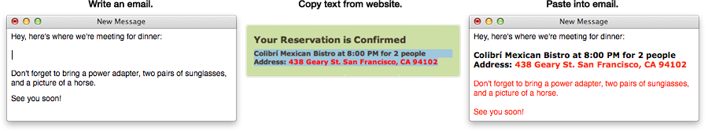
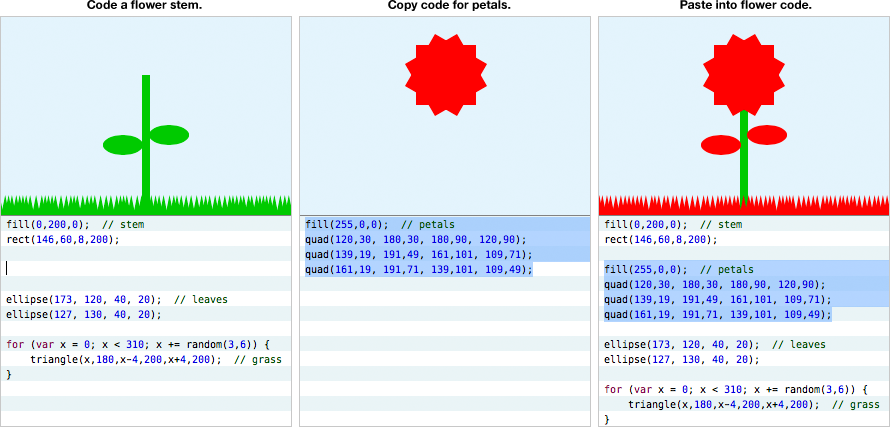

Here's a trick question: How do we get people to understand programming?
Khan Academy recently launched an online environment for learning to program. It offers a set of tutorials based on the JavaScript and Processing languages, and features a "live coding" environment, where the program's output updates as the programmer types.
Because my work was cited as an inspiration for the Khan system, I felt I should respond with two thoughts about learning:
- Programming is a way of thinking, not a rote skill. Learning about "for" loops is not learning to program, any more than learning about pencils is learning to draw.
- People understand what they can see. If a programmer cannot see what a program is doing, she can't understand it.
Thus, the goals of a programming system should be:
- to support and encourage powerful ways of thinking
- to enable programmers to see and understand the execution of their programs
A live-coding Processing environment addresses neither of these goals. JavaScript and Processing are poorly-designed languages that support weak ways of thinking, and ignore decades of learning about learning. And live coding, as a standalone feature, misses the point.
Alan Perlis wrote, "To understand a program, you must become both the machine and the program." This view is a mistake, and it is this widespread and virulent mistake that keeps programming a difficult and obscure art. A person is not a machine, and should not be forced to think like one.
How do we get people to understand programming?
We change programming. We turn it into something that's understandable by people.
Contents
The concept of a system split between the computer and the head was derived from Will Wright's
thoughts on games.
A programming system has two parts. The programming "environment" is the part that's installed on the computer. The programming "language" is the part that's installed in the programmer's head.
This essay presents a set of design principles for an environment and language suitable for learning.
The environment should allow the learner to:
- read the vocabulary -- what do these words mean?
- follow the flow -- what happens when?
- see the state -- what is the computer thinking?
- create by reacting -- start somewhere, then sculpt
- create by abstracting -- start concrete, then generalize
The language should provide:
- identity and metaphor -- how can I relate the computer's world to my own?
- decomposition -- how do I break down my thoughts into mind-sized pieces?
- recomposition -- how do I glue pieces together?
- readability -- what do these words mean?
The features are not the point
We often think of a programming environment or language in terms of its features -- this one "has code folding", that one "has type inference". This is like thinking about a book in terms of its words -- this book has a "fortuitous", that one has a "munificent". What matters is not individual words, but how the words together convey a message.
Likewise, a well-designed system is not simply a bag of features. A good system is designed to encourage particular ways of thinking, with all features carefully and cohesively designed around that purpose.
This essay will present many features! The trick is to see through them -- to see the underlying design principles that they represent, and understand how these principles enable the programmer to think.
Here is a simple tutorial program that a learner might face:
For the sake of comparison, the examples here will use the same languages as the Khan Academy system, JavaScript and Processing.
Before a reader can make any sense of this code, before she can even begin to understand how it works, here are some questions she will have:

- What does "fill" mean?
- What do those numbers after "fill" mean?
- What do those numbers after "ellipse" mean?
- What units are these numbers in? What ranges are they in?
- Why are there so many numbers?
Khan Academy's tutorials encourage the learner to address these questions by randomly adjusting numbers and trying to figure out what they do.
Thought experiment. Imagine if you bought a new microwave, took it out of the box, and found a panel of unlabeled buttons.
Imagine if the microwave encouraged you to randomly hit buttons until you figured out what they did.
Now, imagine if your cookbook advised you that randomly hitting unlabeled buttons was how you learn cooking.
Make meaning transparent
Learning cooking is not about guessing the functionality of your kitchen appliances. It's about understanding how ingredients can be combined.
Likewise, guessing the third argument of the "ellipse" function isn't "learning programming". It's simply a barrier to learning. In a modern environment, memorizing the minutia of an API should be as relevant as memorizing times tables.
The environment is responsible for making meaning transparent. The environment must enable the reader to effortlessly read the program, to decode the code, so she can concentrate on genuine programming concepts -- how the algorithmic "ingredients" combine.
Here is one example of how a programming environment can make meaning transparent, by providing labels on mouse-over:
Control structures can be labeled as well.
It's tempting to think of this as "inline help", but it's not help -- it's simply labeling. The problem with the following UI isn't that it lacks a "help feature". The problem is that nothing is labeled.
That UI is exactly as informative as this line of code:
Why do we consider the code acceptable and the UI not? Why do we expect programmers to "look up" functions in "documentation", while modern user interfaces are designed so that documentation is typically unnecessary?
Explain in context
A programming environment is a user interface for understanding a program. Especially in an environment for learning, the environment must be designed to explain.
One attribute of great explanations is that they are often embedded in the context of what they are explaining. That is, they show as well as tell.
Instead of just describing what vocabulary means, we can often show it in the context of the data. In the following example, the labels connect the code and its output:
Such a connection can be especially powerful when a line of code does multiple things:
Summary — Read the vocabulary
The particular solutions shown here are merely examples. What matters is the underlying purpose: enabling the learner to read the program.
- The environment should make meaning transparent, so the learner can concentrate on high-level concepts, not vocabulary.
- The environment should explain in context. Show and tell. Annotate the data, not just the code.
The examples above are just one of many ways of achieving these goals. All that really matters is that somehow the learner's questions get answered:
An environment which allows learners to get hung up on these questions is an environment which discourages learners from even getting started.
A typical live-coding environment presents the learner with code on the left, and the output of the code on the right. When the code is changed, the output updates instantaneously.
Another thought experiment. Imagine a cooking show, ruthlessly abbreviated. First, you're shown a counter full of ingredients. Then, you see a delicious soufflé. Then, the show's over.
Would you understand how that soufflé was made? Would you feel prepared to create one yourself?
Of course not. You need to see how the ingredients are combined. You need to see the steps.
The programming environment exhibits the same ruthless abbreviation as this hypothetical cooking show. We see code on the left and a result on the right, but it's the steps in between which matter most. The computer traces a path through the code, looping around loops and calling into functions, updating variables and incrementally building up the output. We see none of this.
People understand things that they can see and touch. In order for a learner to understand what the program is actually doing, the program flow must be made visible and tangible.
Make flow tangible
That example program again:
This is a particularly difficult example for a beginner to follow. The "for" construct, with its three statements on a single line, makes the control flow jump around bizarrely, and is an unnecessarily steep introduction to the concept of looping.
To make the flow more sane for a learner, the loop can be rewritten using "while":
Now, the control flow must be made tangible. We must put the execution of the program into the programmer's hand, let her feel that it is a real thing, let her own it.
In the following example, the programmer uses a slider to scrub through the execution:
This control allows the programmer to move around the loop at her own pace, and understand what is happening at each step. She can go backwards and forwards, dwell in difficult areas, and compare what is happening at different times. She can study how the output is built up over time, instead of seeing it magically appear all at once.
Make flow visible
The example above allows the programmer to follow the program's execution over time. But she's peeking through a pinhole, only seeing a single point in time at any instant. She has no visual context.
To illustrate what I mean, here are two representations of a trip around my neighborhood, one where the neighborhood itself isn't visible, and one where it is.

This "overhead view" lets a person understand the trip at a higher level. She can see the shape of the trip. She can see patterns.
In the following example, the program flow is plotted on a timeline. Each line of code that is executed leaves a dot behind. The programmer can take in the entire flow at a glance:
The patterns that emerge are especially helpful in the presence of conditionals and other forms of flow control:
It's possible that some novices may initially be confused by a timeline, but I'd say that learning to read a timeline is a far more valuable and general skill than learning the details of some graphics library.
This visualization allows the programmer to see the "shape" of an algorithm, and understand it at a higher level. The program flow is no longer "one line after another", but a pattern of lines over time.
Make time tangible
Line-by-line execution is a very fine-grained view of time. The programmer also thinks about time at other granularities.
For instance, animations and games run at a frame rate, say, sixty frames per second. Every 1/60th of a second, the program prepares the next frame to display on the screen. Other programs are event-driven -- they respond to an external event, such as a button click or network request, by performing some computation, and then they wait for the next event.
These frames or event responses form a natural way of "chunking" time. If the execution of a line of code is like a sentence, then a frame is like a chapter. These chapters can also be made tangible, so the programmer can understand the execution at this granularity as well.
The following example provides a timeline for exploring line-by-line execution, and a slider for exploring frame-by-frame.
This control enables the programmer to go backwards and forwards through time, study interesting frames, and compare the execution across different frames.
Make time visible
In the above example, we are once again peeking through a pinhole, seeing just one frame at a time. In the following example, all frames are lightly overlaid, in order to give context to the active frame. The entire path of the ball can be seen at once.
* One of the deepest and most powerful ideas in mathematics is the relationship between a differential formulation (such as a step-by-step process, like our "draw" function) and its integrated form (such as a function of time, or plot over time). "Flattening time" allows the learner to see the process and its trajectory as two representations of the same thing, and thereby think of them interchangeably.
The output of the program is no longer a series of fleeting moments, but can be seen as a single, solid thing that extends over time. There is great power in this way of thinking.*
Summary — Follow the flow
Again, the particular solutions shown here are merely examples. What matters is the underlying purpose: enabling the learner to follow the program flow, by controlling time and seeing patterns across time. Transforming flow from an invisible, ephemeral notion into a solid thing that can be studied explicitly.
- The environment can make flow tangible, by enabling the programmer to explore forward and backward at her own pace.
- The environment can make flow visible, by visualizing the pattern of execution.
- The environment can represent time at multiple granularities, such as frames or event responses, to enable exploration across these meaningful chunks of execution.
A simple program:
The third line declares a variable named "scaleFactor", which varies with each iteration of the loop.
Take a moment to look at that line, and think about these questions:
- What values does scaleFactor take on? 1? 100? -1? pi / 2?
- What is scaleFactor at the beginning of the loop? At the end?
- How does scaleFactor change over the course of the loop? Linearly up? Linearly down? Does the change get faster or slower?
Wait. Wait a minute. Were you trying to answer those questions by doing arithmetic in your head? The computer somehow drew that picture, so the computer must have calculated all those scaleFactors itself. Are you seriously recalculating them in your head?
* Other than setting a "breakpoint", which is like monitoring traffic on the freeway by setting up a barricade. Or writing to a "console", which is like figuring out where your dog goes during the day by following the trail of droppings.
Now imagine if scaleFactor also depended on some other variables, or some other functions, or external input. There would be no way to easily answer those questions.*
Think about this. We expect programmers to write code that manipulates variables, without ever seeing the values of those variables. We expect readers to understand code that manipulates variables, without ever seeing the values of the variables. The entire purpose of code is to manipulate data, and we never see the data. We write with blindfolds, and we read by playing pretend with data-phantoms in our imaginations.
One of the all-time most popular programming models is the spreadsheet. A spreadsheet is the dual of a conventional programming language -- a language shows all the code, but hides the data. A spreadsheet shows all the data, but hides the code. Some people believe that spreadsheets are popular because of their two-dimensional grid, but that's a minor factor. Spreadsheets rule because they show the data.
Information design pioneer Edward Tufte has one primary rule, and this rule should be the principle underlying any environment for creating or understanding.
Show the data.
If you are serious about creating a programming environment for learning, the number one thing you can do -- more important than live coding or adjustable constants, more important than narrated lessons or discussion forums, more important than badges or points or ultra-points or anything else -- is to show the data.
Show the data
Because the value of a variable varies over time, showing the data is intimately connected with showing time.
The previous section presented a timeline representation that showed the data at each step. In the following example, the programmer mouses over a particular row of the timeline to concentrate on a single line.
In this example, it is easy to answer the first two questions. By skimming over the execution of that line of code, we can see all of the values that scaleFactor takes on, and when.
However, it is still difficult to answer the third question: how does the variable vary? What is the shape of its change? The question is difficult because we are, once again, peeking through a pinhole, only seeing a single point at a time.
Edward Tufte has a second rule. It is not enough to just show the data. We must show comparisons.
Show comparisons
Data needs context. It is rarely enough to see a single data point in isolation. We understand data by comparing it to other data.
The timeline examples so far have used dots to represent executed lines. But instead of dots, we can show data. The following timeline shows each of the scaleFactors:
Almost every line of code here calculates something. The environment should provide the best visualization of whatever that something is. For example, the "rotate" line can show the rotations.
The "fill" line sets a fill color. That color can be shown.
The "triangle" line draws a triangle to the canvas, rotated and colored. The timeline can show a thumbnail of each triangle produced.
Taken together, we have a timeline that depicts not just the flow, but all of the data calculated in that flow. The execution of the program is laid bare for the reader. At a glance, she can see which lines were executed, when they were executed, and what they produced. The flow and the data are both shown in context.
The example above only loops twenty times. Is it possible to understand a loop with, say, thousands of iterations, without drowning in thousands of numbers?
Yes -- there is an entire field of study devoted to depicting large amounts of numbers. To visualize this data, we can use all of the standard techniques of data visualization.
In the following example, as the programmer zooms the timeline out, the visualization automatically switches from a table to a plot.
Eliminate hidden state
In order to understand what a line of code does, the learner must see its effect. For example, as the programmer moves over iterations of the "triangle" line, she sees each triangle appear on the canvas:
The "fill" line, on the other hand, sets the fill color for subsequent drawing operations. When the programmer moves over this line, what effect does she see? She sees nothing happen, because the "fill" function modifies hidden state.
The Processing graphics library relies heavily on implicit state, in the form of the "current" fill color, stroke color, transform matrix, and so on. Code that modifies this state produces no visible effect on the canvas. In an interactive environment, this is unacceptable.
There are two design options here. One alternative is to eliminate the state. For example, color could be passed as a parameter to the "triangle" function.

The other alternative is to show the state. In the following example, the current fill and stroke colors are shown above the canvas. Now, when a line of code changes the fill color, the programmer actually sees something change. Making something visible makes it real.
All state must be eliminated or shown. Either can be a reasonable design decision. An environment that does neither -- forcing learners to imagine the state and make sense of functions that produce no visible effect -- is irresponsible design, and disrespectful to the learner.
Just the concept of a "transform matrix" is undoubtably baffling for many learners, but with a better metaphor, it needn't be so. Logo, for instance, uses a turtle to reify translation and rotation, and children understand it readily. More on this later.
The current transform matrix is a particularly critical and confusing member of the state. Drawing anything interesting with the Processing graphics library requires matrix transforms, but the current transform is invisible. Functions such as "scale" and "rotate" have no visible effect, and compound transformations (such as translation followed by scale, or should it be the other way around?) often involve groping blindly through trial-and-error.
In the following example, the transform is visualized, and the effect of every function can be seen directly.
Summary — See the state
Code manipulates data. To understand code, a learner must see the data, and see the effect of code on the data.
- The environment must show the data. If a line of code computes a thing, that thing should be immediately visible.
- The environment must show comparisons. If a program computes many things, all of those things should be shown in context. This is nothing more than data visualization.
- The system must have no hidden state. State should either be eliminated, or represented as explicit objects on the screen. Every action must have a visible effect.
I was recently watching an artist friend begin a painting, and I asked him what a particular shape on the canvas was going to be. He said that he wasn't sure yet; he was just "pushing paint around on the canvas", reacting to and getting inspired by the forms that emerged. Likewise, most musicians don't compose entire melodies in their head and then write them down; instead, they noodle around on a instrument for a while, playing with patterns and reacting to what they hear, adjusting and sculpting.
An essential aspect of a painter's canvas and a musical instrument is the immediacy with which the artist gets something there to react to. A canvas or sketchbook serves as an "external imagination", where an artist can grow an idea from birth to maturity by continuously reacting to what's in front of him.
Programmers, by contrast, have traditionally worked in their heads, first imagining the details of a program, then laboriously coding them.
Working in the head doesn't scale. The head is a hardware platform that hasn't been updated in millions of years. To enable the programmer to achieve increasingly complex feats of creativity, the environment must get the programmer out of her head, by providing an external imagination where the programmer can always be reacting to a work-in-progress.
* Recently, some people have mistakenly attributed the "live coding" concept to me, but it's not a new idea, it's certainly not "my idea", and it's not a particularly interesting idea in itself. Immediate-update is merely a prerequisite for doing anything interesting -- it enables other features which require a tight feedback loop. An action game with a low frame rate is a bad game, but simply upping the frame rate doesn't magically make a game good.
Some programming systems attempt to address this with a so-called "live coding" environment, where the output updates immediately as the code changes. An example of live coding:*
As you can see, live coding, on its own, is not especially useful. The programmer still must type at least a full line of code before seeing any effect. This means that she must already understand what line of code she needs to write. The programmer is still doing the creative work entirely in her head -- imagining the next addition to the program and then translating it into code.
Get something on the screen as soon as possible
Live coding does, however, provide a foundation for other features which can jump-start the create-by-reacting process. In the following example, the environment offers autocomplete with default arguments. After typing just a couple of characters, the programmer immediately sees something on the screen, and can proceed to adjust it.
Autocomplete is a common feature of most programming environments, but there are two critical subtleties here. First, the functions all have default arguments (position, width, height, and so on are already filled in), so each completion is a complete statement that produces a visible effect. Second, a default completion is selected immediately. Here's what this means for the programmer's thought process:
In the example above, the programmer wants to draw a roof on the house. She doesn't need to mentally plan out how to draw the roof beforehand -- she doesn't need to imagine which functions would be appropriate. She just needs the vague notion: "I want to draw something." She starts typing "draw", and immediately sees a shape on the screen.
At this point, she can stop imagining and start reacting:
- "This is the wrong shape. Which shape will work better?" She goes down the list and turns the shape into a triangle.
- "This is a right triangle. I want a different triangle." She adjusts the triangle's points into a more roof-like shape.
- "The roof isn't lying on the house." She adjusts the triangle to lower it onto the house.
* Strangely, I don't actually know of any APIs that are intentionally designed with autocomplete in mind. I do know many APIs, such as Processing, that are designed for brevity, which is irrelevant in an environment with good autocomplete.
This example assumed a hypothetical graphics library which was designed for autocomplete -- all of the drawing functions begin with "draw", so the completion list would appear as the designer intended.*
A different way to structure the library would be to provide a single "shape" function, which takes the type of shape (triangle, ellipse, etc.) as an argument. For example:
This could help to further encourage the create-by-reacting way of thinking. Because "drawTriangle" and "drawRect" aren't in the vocabulary, the programmer would never find herself thinking about specific shape functions before something is on the screen. Her starting point is always just "shape".
The environment is the user interface for working with a program. Consider the second menu that appeared above, with "line", "triangle", etc. If an argument can take one of five values, the environment should provide the best interface for selecting among those values. That is, in this situation, the programmer is a user who has to select one of five choices. How would a good UI designer represent those five choices? Perhaps more like this:
Why should we expect anything less from a programming environment?
Dump the parts bucket onto the floor
As a child, you probably had the experience of playing with a construction kit of some kind -- Legos, or Erector Sets, or even just blocks. As a first act before starting to build, a child will often spread out all of the parts on the floor.

This provides more than simply quick access. It allows the child to scan the available parts and get new ideas. A child building a Lego car might spot a wide flat piece, and decide to give the car wings.
This is a second form of create-by-reacting. In addition to reacting to the object under construction, the child is also reacting to the parts she has available.
In the following example, the available functions are located adjacent to the coding area, and the programmer can skim over these "parts" and get ideas.
The above example encourages the programmer to explore the available functions. A learner who would never think to try typing the "bezier" function, with its unfamiliar name and eight arguments, can now easily stumble upon it and discover what it's about.
The example above is one way of representing the "parts bucket" for programmatic drawing. But would a user interface designer consider that to be the best interface for drawing a picture on a computer screen? What about the following?
An objection might arise at this point. With this interface, is this even "programming"?
No, not really. But none of the examples in this section are "programming". Typing in the code to draw a static shape --

-- is not programming! It's merely a very cumbersome form of illustration. It becomes genuine programming when the code is abstracted -- when arguments are variable, when a block of code can do different things at different times. The next section will discuss how create-by-reacting leads into create-by-abstracting.
Summary — Create by reacting
* Thus, we need a powerful way of getting something onscreen, and powerful ways of adjusting it. Adjustable values (such as draggable numbers or color palettes) are a valuable component for the latter purpose, and I am a long-time proponent of adjustable values (e.g.,
Scrubbing Calculator,
Explorable Explanations,
Ten Brighter Ideas). However, I have always proposed adjustable numbers in a context where the adjuster
already understands the meaning of the number. As mentioned earlier, I am very uncomfortable with the Khan Academy approach of encouraging learners to adjust unlabeled numbers and figure out what they're for, and I feel that this is a case of a tool being adopted without an understanding of what purpose the tool serves.
The create-by-reacting way of thinking could be stated as: start with something, then adjust until it's right.*
The programmer must be able to do her thinking out in the environment, not trapped in her head. The environment must serve as an external imagination, where the programmer can be continuously reacting to a work-in-progress.
To be clear, this does not relieve the programmer from thinking! It simply makes those thoughts immediately visible. I am happy to be composing this essay in a text editor, where my words become visible and editable as soon as I think of them, as opposed to working entirely internally like the orators and playwrights of the distant past.
- The environment must be designed to get something on the screen as soon as possible, so the programmer can start reacting. This requires modeling the programmer's thought process, and designing a system that can pick up on the earliest possible seed of thought.
- The environment must dump the parts bucket onto the floor, allowing the programmer to continuously react to her raw material and spark new ideas.
Learning programming is learning abstraction.
A computer program that is just a list of fixed instructions -- draw a rectangle here, then a triangle there -- is easy enough to write. Easy to follow, easy to understand.

It also makes no sense at all. It would be much easier to simply draw that house by hand. What is the point of learning to "code", if it's just a way of getting the computer to do things that are easier to do directly?
Because code can be generalized beyond that specific case. We can change the program so it draws the house anywhere we ask. We can change the program to draw many houses, and change it again so that houses can have different heights. Critically, we can draw all these different houses from a single description.

The description still says "draw a rectangle here, then a triangle there", but the here and there have been abstracted. Different parameters give us different heres and different theres.
How does a programmer learn to write this abstract code? How does she learn to write a single description that is generalized for many cases?
She doesn't. The learner should start by writing concrete code, and then gradually change it to introduce abstraction. And the environment must provide the tools to perform this process, in such a way that the learner can understand the program at each stage.
Start constant, then vary
In the create-by-abstracting way of thinking, the programmer starts by creating a specific case, typically involving constants. She then moves to the general case by turning those constants into variables. Here's an example of how the environment can encourage this way of thinking, starting with the house from earlier.

The programmer wants to move the house to a different location. She can't move it by adjusting a single number in the code, because there are four different points which all need to change at the same time -- the rectangle's origin, and the triangle's three points.
Here, the programmer selects one of the numbers, and converts it into a variable.
She then
connects the variable to another number, by dragging from one to the other.
There are two additional arguments to "triangle" which need to vary as well. When she connects the variable, whose value is 80, to the constant 100, the environment offers a choice of four possible relationships between the numbers.
The four expressions involve addition, subtraction, multiplication, and division respectively. One of them will typically be either the correct relationship or a good starting point.
Here is the entire process of introducing the variable.
Start with one, then make many
In the example above, the house is now abstracted -- the code doesn't just draw one fixed house, but can draw a house anywhere. This abstracted code can now be used to draw many different houses.
In the following example, the programmer wants to draw a row of houses. She selects the abstracted code, and
converts it into a loop.
The variable in the first line of the selection becomes an induction variable, and the programmer can then adjust its bounds.
This is a process of starting with a specific case, and progressively generalizing:
- First, the programmer creates a house at a fixed location. Here, she has interactive control over each individual shape.
- She turns the house's location into a variable. Now, she has interactive control over the variable, which affects many shapes.
- She introduces a loop to vary that variable. Now, she has interactive control over the bounds of the loop, which affects many houses, which affect many shapes.
At each stage, the programmer has interactive control over the relevant parameters, but the parameters are at successively higher levels of abstraction. That is, the programmer can still create by reacting, but she's creating and reacting at higher levels.
---
Instead of drawing an evenly-spaced row of houses, the programmer now wants individual control over each of the houses. Starting from the variable abstraction, she selects the code and converts it into a function.
By duplicating the function call, she obtains several houses which can be controlled individually.
Now, instead of identical houses, she wants to vary the heights of the houses. She introduces another variable, and then converts it into an additional argument to the function.
* In
Ladder of Abstraction terminology, the programmer climbed two levels on the ladder of abstraction -- she controlled x, then abstracted over x, then controlled y, then abstracted over y.
The process, again, consists of starting concrete, and progressively introducing abstraction:*
- The programmer creates a drawing of a house.
- She turns x into a variable, so she can control the house's position.
- She turns x into a function argument, so different houses can have different positions.
- She turns y into a variable, so she can control the house's height.
- She turns y into a function argument, so different houses can have different heights.
Summary — Create by abstracting
Start concrete, start grounded. Start with one specific case, entirely understood. Then gradually generalize, level by level, in such a way that the programmer still fully understands the program at each level of abstraction.
Fully concrete code can be micromanaged -- the programmer has explicit control over every step of the execution. Abstraction means giving up some of this control, and this can be scary for a learner.
But the learner can work up to it -- introduce a variable, interactively control it, connect the variable to another value, interactively control it, turn the variable into a function argument, interactively control it. The learner always gets the experience of interactively controlling the lower-level details, understanding them, developing trust in them, before handing off that control to an abstraction and moving to a higher level of control.
* The code transformations shown in the above examples have a superficial resemblance to "refactoring", which is supported by some environments. However, the features have different intents. Refactoring is about writing working but poorly-organized code, then cleaning it up. Create-by-abstracting is about writing code for a specific case, then generalizing it.
The environment must support this process. A typical text editor only provides direct support for growing "outward" -- adding new lines of code. The environment must also support growing "upward" -- abstracting over existing code.*
- The environment should encourage the learner to start constant, then vary, by providing meaningful ways of gradually and seamlessly transitioning constant expressions into variable expressions.
- The environment should encourage the learner to start with one, then make many, by providing ways of using those variable expressions at a higher level, such as function application or looping.
A programming system has two parts. The environment is installed on the computer, and the language is installed in the programmer's head.
The design of the language is just as critical to the programmer's way of thinking as the design of the environment. In the best cases, they are co-designed and inseparable. Many recent learning environments use JavaScript or Processing, and for the sake of comparison, the examples in this essay used them as well. But neither is a well-designed language for learning.
Fortunately, there are giant shoulders to stand on here -- programming systems that were carefully and beautifully designed around the way people think and learn. This section will briefly offer some design principles that have been distilled from these great systems of the past.
Great works
The canonical work on designing programming systems for learning, and perhaps the greatest book ever written on learning in general, is Seymour Papert's "Mindstorms".
Designing a learning system without a solid understanding of the principles in this book is like designing a mechanical system without understanding "the lever". Or "gravity". If you are reading this essay (and I'm pretty sure you are!) then you need to read "Mindstorms".
Seriously. I mean it. If you are going to design anything whatsoever related to learning, then you literally need to read "Mindstorms".
Please, read "Mindstorms".
---
This section will make reference to four seminal programming systems that were designed for learning, and I strongly recommend studying each of them.

To be clear, I'm not advocating using any of these systems, in either their historical or modern incarnations. I'm advocating understanding them, and building on their insights.
Identity and metaphor
In Logo, the programmer draws pictures by directing the "turtle", an onscreen character which leaves a trail as it moves:

Watch just two minutes of this video -- the children, and the beardy guy talking:
That's Seymour Papert explaining the Logo turtle. The turtle serves a number of brilliant functions, but the most important is that the programmer can identify with it. To figure out how to make the turtle perform an action, the programmer can ask how she would perform that action herself, if she were the turtle.
For example, to figure out how to draw a circle, a learner will walk around in circles for a bit, and quickly derive a "circle procedure" of taking a step forward, turning a bit, taking a step forward, turning a bit. After teaching it to herself, the learner can then teach it to the computer.* * Here, the learner has derived and implemented the differential equation for a circle, without knowing what a differential equation is. To quote Papert, a Logo program is an "intuitive analog of the differential equation". The turtle is the in-computer embodiment of the programmer herself, a "self", like the player-character in a video game, and thereby allows the learner to transfer her knowledge of her own body into knowledge of programming.
Every programming language is made of metaphors, but some fit the mind better than others. Standard imperative programming uses the metaphor of "assigning to variables", shuffling bits between little boxes. Unlike the Logo turtle, this metaphor was not designed to resonate with how people learn and understand; it simply evolved as a thin layer over the metaphors used in the underlying machine architecture, such as "storing to memory".* * Alan Kay in The Early History of Smalltalk: "Assignment statements -- even abstract ones -- express very low-level goals... Human programmers aren't Turing machines -- and the less their programming systems require Turing machine techniques, the better."
Smalltalk, like Logo, also has a strong resonant metaphor, which is the message. All computation in Smalltalk is represented by objects sending and responding to messages from other objects. In order to program the behavior of an object, the programmer casts herself into the role of that object (to the extent of referring to the object as "self"!) and thinks of herself as carrying on a conversation with other objects. This is a powerful metaphor, because role-playing and conversing are powerful innate human facilities. As with Logo, tremendous time and thought went into the crafting and honing of Smalltalk's metaphors.
In HyperCard, the program is represented as a stack of cards, with the programmer drawing objects onto each card. Unlike a typical programming language, where an "object" is an abstract ethereal entity floating inside the computer, every object in HyperCard has a "physical presence" -- it has a location on a particular card, it can be seen, it can be interacted with. Every object in HyperCard is a "real thing", and this is a powerful metaphor which allows programmers to apply their intuition and understanding of the physical world.
Rocky's Boots is structured as a video game, with a player-character that can be moved around directly. The player not only can pick up and move objects, but also acts as a power source -- a literally powerful metaphor. Everything is visible and tangible -- electricity is not some abstract voltage reading, but can be seen directly as orange fire, flowing through wires. This beautiful metaphor makes it trivial to follow the flow and see the state.
In Processing, by contrast, the programmer has no identity within the system. There are no strong metaphors that allow the programmer to translate her experiences as a person into programming knowledge. The programmer cannot solve a programming problem by performing it in the real world.
Processing's core metaphor is the "painter's algorithm" -- the computer places a series of shapes on the screen, like drawing on paper. Because this metaphor carries no computational power (you cannot compute by filling in pixels), all computation occurs outside the bounds of the metaphor. In this example of a bouncing-ball animation --
-- the simulated properties of the ball (position, velocity) are not associated with the picture of the ball onscreen. They are computed and stored abstractly as "numbers" in "variables", and the ball is merely a shadow that is cast off by this ethereal internal representation. The ball cannot be picked up and moved; it cannot be told how to interact with other objects. It is not a "living thing", and the simulation cannot be understood or thought about in any way other than "numbers in variables". This is a very weak way of thinking.* * For examples of systems where every onscreen object is a living tangible thing, see Etoys or Morphic.
Decomposition
Modularity is the human mind's lever against complexity. Breaking down a complex thing into understandable chunks is essential for understanding, perhaps the essence of understanding.
A programming language must encourage the programmer to decompose -- to approach a complex problem by breaking it into simpler problems. Papert refers to this as breaking down a program into "mind-size bites".
Logo uses the metaphor of "teaching the turtle a new word". To draw a face consisting of four circles, we can teach the turtle a subprocedure for drawing a circle, and then apply that subprocedure four times. Long and careful thought was given to the process by which a learner discovers the need for subprocedures, and then factors a large procedure into subprocedures.
Smalltalk is, in essence, a philosophy of decomposition in the form of a programming language. This is Alan Kay inventing objects:
Bob Barton [said] "The basic principle of recursive design is to make the parts have the same power as the whole." For the first time I thought of the whole as the entire computer, and wondered why anyone would want to divide it up into weaker things called data structures and procedures. Why not divide it up into little computers... Why not thousands of them, each simulating a useful structure?
Smalltalk's key insight was that a complex computer program could be decomposed into smaller computers, called "objects". Programming in Smalltalk is almost entirely an exercise in decomposition -- breaking down thoughts into classes and messages.
Forth is another language whose extraordinary decomposability is valuable to study and understand.
Almost every computer language provides some facility for decomposition, but some are better than others. In his wonderful essay Why Functional Programming Matters, John Hughes argues that decomposition lies at the heart of the power of languages like Haskell:
When writing a modular program to
solve a problem, one first divides the problem into subproblems, then solves the
subproblems, and finally combines the solutions. The ways in which one can
divide up the original problem depend directly on the ways in which one can glue
solutions together. Therefore, to increase one's ability to modularize a problem
conceptually, one must provide new kinds of glue in the programming language.
Functional languages provide two new, very important kinds of glue... This is the key to functional programming’s power -- it allows improved modularization.
Khan Academy's tutorials do not mention decomposition or functions at all, and many example programs are written as one long list of instructions.
Processing allows for Logo-style decomposition into subprocedures, in the form of function definitions. The more powerful Smalltalk-style decomposition, where submodules can be thought about independently, is not supported. In Processing, drawing and input events are tied to single entry points -- top-level functions such as "draw" and "mouseDown". The behavior of submodules must be tangled across these global functions. Clean decomposition is not possible.
Consider a programmer who has made a bouncing ball animation. How does she go from one ball to two, to a hundred? How does she make the balls bounce off one another? How does she make balls draggable with the mouse? In a genuine learning environment such as Etoys, this progression is natural and encouraged. In Processing, each of these steps is a nightmare of needless complexity.
A language that discourages decomposition is a language that cripples a programmer's most valuable way of thinking.
Recomposition
Creating is remixing. To a large extent, new ideas are old ideas in new combinations.
A programming language must encourage recomposition -- grabbing parts of other programs, assembling them together, modifying them, building on top of them. This gives creators the initial material they need to create by reacting, instead of facing every new idea with a blank page. It also allows creators to learn from each other, instead of deriving techniques and style in a vacuum.
HyperCard was designed for recomposition, and is perhaps still unsurpassed in that respect. Bill Atkinson fully intended for creators to assemble a program by copying and pasting objects from other programs, and then gradually tweaking and customizing them. Every program thus serves as a parts kit for creating new programs. Because all source code, if any, is embedded in individual objects in the form of scripts, and because scripts use loose, relative references to other objects, groups of related objects can be transplanted much more easily and successfully than in other systems.* * HyperCard is seen by some as "what the web should have been". It's lamentable that a creator cannot, and probably can never, create a website by copying and pasting graphical objects from other websites. This is not due to "technological limitations" -- it's a consequence of thoughtless system design.
Many people revere HyperCard for initiating them into programming. Any user can remix their software with copy and paste, thereby subtly transitioning from user to creator, and often eventually from creator to programmer.
Processing's lack of modularity is a major barrier to recomposition. The programmer cannot simply grab a friend's bouncing ball and place it alongside her own bouncing ball -- variables must be renamed or manually encapsulated; the "draw" and mouse functions must be woven together, and so on. One can easily start from an existing Processing program and modify it, but the language does not encourage combining two programs.
Worse, Processing's dependence on global state hinders even the simplest forms of recomposition. As an analogy, imagine you're writing an email. You copy some red text from a website, paste it into your email, and everything else in your email turns red:

This is exactly what can happen when copying and pasting lines of Processing code, because Processing's way of handling color is inherently leaky:

Experienced programmers might look at this example and consider this a programmer's error, because this is "just how code works." But this error is not intrinsic to programming; it's a consequence of specific design decisions -- mutable state, global variables, no encapsulation.
Worse yet, Processing has global modes which alter the meaning of function arguments. The following line of code sets a fill color. Do you know what color it is?
Trick question -- it's impossible to know what color it is, because the meaning of "255" depends on the global "color mode". It could be any of these colors:
If two Processing programs specify their colors in different color modes, then combining the two programs is almost hopeless.
Designing a system that supports recomposition demands long and careful thought, and design decisions that make programming more convenient for individuals may be detrimental to social creation.
Readability
A learner must be able to look at a line of code and know what it means.
Syntax matters. Here are two statements in HyperCard's scripting language, and their equivalents in a more conventional syntax:
Write "hello" to file "greetings".
Drag from "0,0" to "100,100" with optionKey.
writeFile("hello", "greetings");
dragMouse(0, 0, 100, 100, OPTION_KEY);
See also
Inform 7. English-like languages like these are sometimes accused of being difficult to write (since the syntax is more restrictive than actual English), but that's a fault of the environment. Programmers shouldn't be
typing this stuff.
HyperTalk happens to use an English-like syntax, but that's not the point here. What matters is that every argument can be understood in context. It's clear that "hello" is a string and "greetings" is a filename, and that "0,0" and "100,100" are start and end points. In the conventional syntax, both are ambiguous.
As another example, here's how a programmer might draw an ellipse in three languages:
canvas drawEllipseCenteredAtX:50 y:50 width:100 height:100.
ellipse(50,50,100,100);
push 100; push 100; push 50; push 50; call _ellipse
In Smalltalk, arguments have context. Processing's "ellipse" is exactly as cryptic as assembly language. The reader must look up or memorize every argument, a significant barrier to reading.
Names matter. Below are four array methods from Apple's Cocoa framework, and the equivalent JavaScript methods:
mutate array and return nothing
mutate nothing and return new array
addObject
addObjectsFromArray
arrayByAddingObject
arrayByAddingObjectsFromArray
push
splice
concat
concat
To see the amount of thought that is put into Cocoa naming, I highly recommend the Cocoa
coding guidelines.
Cocoa follows strong grammatical conventions which immediately convey the meanings of methods. Verb phrases ("addObject") perform an action and return nothing. Noun phrases ("arrayByAddingObject") return the noun so named, and generally do not have stateful effects unless the name suggests so. Expected arguments are clearly indicated by the name, in Smalltalk style. ("addObject" takes an object; "addObjectsFromArray" takes an array.) Most Cocoa code can thus be read and at least vaguely understood without documentation.
* Processing's "fill" and "stroke" read as verbs, although it's possible they were intended as shorthands to nouns ("fill color" and "stroke color"). In most other libraries (HTML canvas, Quartz, cairo), "fill" and "stroke" are unambiguously verbs, and act accordingly.
By contrast, many of Processing's function names are grammatically ambiguous or misleading. Many nouns, such as "ellipse" and "triangle", perform actions. Many verbs, such as "fill" and "stroke", do not.* The programmer constructs a color using a noun ("color"), and constructs an image using a verb ("createImage"). This sort of linguistic sloppiness is inappropriate, especially in a system for learning. A language must be parsed by people, not just compilers.
The design principles presented in this essay can be used as a checklist to evaluate a programming system for learning.
Does the environment allow the learner to...
- read the vocabulary? -- Is meaning transparent? Is meaning explained in context, by showing and telling?
- follow the flow? -- Is time visible and tangible? At all meaningful granularities?
- see the state? -- Does the environment show the data? Show comparisons? Is hidden state eliminated?
- create by reacting? -- Is something on screen as soon as possible? Is the parts bucket on the floor?
- create by abstracting? -- Can the programmer start concrete, then generalize?
Does the language provide...
- identity and metaphor? -- Is the computer's world connected to the programmer's world?
- decomposition? -- Can the programmer break down her thoughts into mind-sized pieces?
- recomposition? -- Can the programmer put diverse pieces together?
- readability? -- Is meaning transparent?
Some people will defend poorly-designed systems by pointing out all the creativity that they have enabled. For example, if novices are creating lots of programs in the Khan Academy and Processing systems, doesn't that mean the systems are worthwhile and valuable?
Not necessarily. People are inherently creative, and some will manage to create in even the most hostile of environments. That doesn't justify bad design. Ian Bogost has a particularly memorable response to that line of thinking.
This essay suggested some features and references that address these questions, but the questions matter more than my answers.
These are not training wheels
These design principles were presented in the context of systems for learning, but they apply universally. An experienced programmer may not need to know what an "if" statement means, but she does need to understand the runtime behavior of her program, and she needs to understand it while she's programming.
A frequent question about the sort of techniques presented here is, "How does this scale to real-world programming?" This is a reasonable question, but it's somewhat like asking how the internal combustion engine will benefit horses. The question assumes the wrong kind of change.
Here is a more useful attitude: Programming has to work like this. Programmers must be able to read the vocabulary, follow the flow, and see the state. Programmers have to create by reacting and create by abstracting. Assume that these are requirements. Given these requirements, how do we redesign programming?
Here's an example. In many styles of programming today, when an application launches, it creates a large set of interconnected stateful objects. To see the effect of a code change, the application must be "relaunched" -- that is, its entire world is destroyed, and rebuilt again from scratch. How can we "create by reacting", continuously changing the code and seeing continuous effects in the flow and data, when there is no continuity between the application's state before and after the change?
* In the Smalltalk model, for instance, state is persistent and code changes don't affect data. In the Clojure model, code is "mostly functional", with a small amount of carefully-managed state. Either model could be a starting point for a system where continuous code changes can be seen as continuous effects. But there is no future in destroy-the-world programming.
We can't. That's the wrong question. A better question is: How do we design a new programming model that does allow for continuous change? We already have clear hints.*
Another example. Most programs today manipulate abstract data structures and opaque objects, not pictures. How can we visualize the state of these programs?
Again, wrong question. A better attitude is to assert that we have to be able to understand the state of our programs. We can then ask: How do we design data structures that can be visualized? Can we invent data structures that are intended to be visualized? How do we move towards a culture where only visually-understandable data is considered sound? Where opaque data is regarded in the same way that "goto" is today?** Forward reference: Some work that I've done in automatic visualization of ad-hoc data structures will be published later this year, in collaboration with Viewpoints Research.
In his influential essay No Silver Bullet, Fred Brooks makes the case that software is inherently "invisible and unvisualizable", and points out the universal failure of so-called "visual programming" environments. I don't fault Fred Brooks for this view -- the visual programming that he's thinking of indeed has little to offer. But that's because it visualizes the wrong thing.
Traditional visual environments visualize the code. They visualize static structure. But that's not what we need to understand. We need to understand what the code is doing.
Visualize data, not code. Dynamic behavior, not static structure.
Maybe we don't need a silver bullet. We just need to take off our blindfolds to see where we're firing.
Much thanks to Star Simpson, Dan Amelang, Dave Cerf, Patrick Collison, Christina Cacioppo, and Oliver Steele for their feedback on this essay.
This essay was an immune response, triggered by hearing too many times that Inventing on Principle was "about live coding", and seeing too many attempts to "teach programming" by adorning a JavaScript editor with badges and mascots.
Please read Mindstorms. Okay?